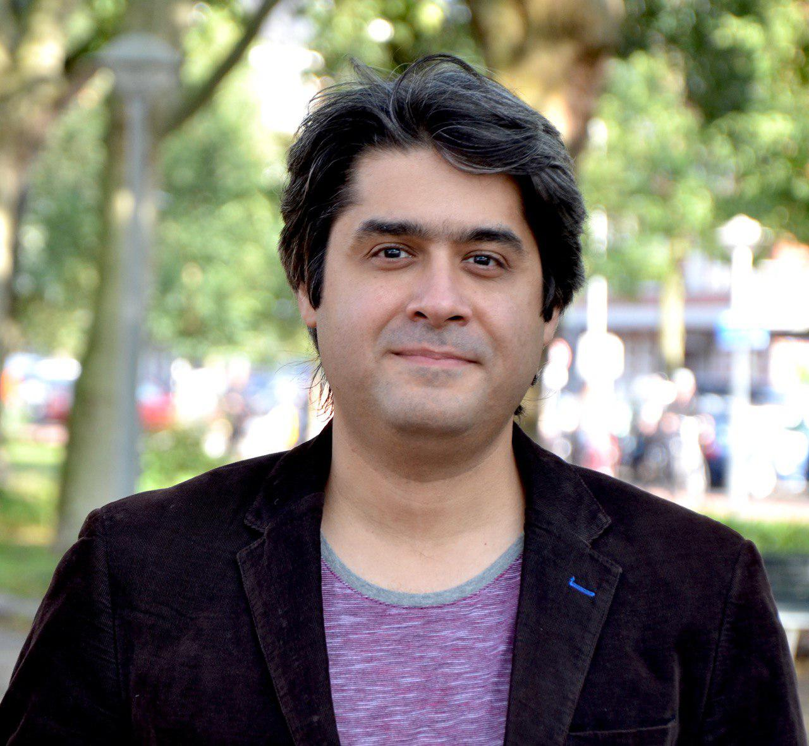

|  |
Arash BehboodiI am machine learning research scientist (Principal Engineer/Manager) at Qualcomm AI Research. My research interests are at the intersection of machine learning, mathematical signal processing and information theory and include in particular learning theory, machine learning for inverse problems, compressed sensing, geometric deep learning and differentiable simulation. I am working as well on machine learning design for wireless communication systems. |
Accepted paper at ICML 2023 - Topology, Algebra, and Geometry in ML: Equivariant Self-supervised Deep Pose Estimation for Cryo EM
The paper Generalization Error Bounds for Iterative Recovery Algorithms Unfolded as Neural Networks got accepted at Information and Inference: a Journal of the IMA.
Final program for Workshop on Resource-Constrained Learning in Wireless Networks at Sixth Conference on Machine Learning and Systems (MLSys 2023) -June 8th, 2023.
A new paper accepted at ICLR 2023: WiNeRT: Towards Neural Ray Tracing for Wireless Channel Modelling.
Two papers got accepted at NeurIPS 2022: PAC-Bayesian Generalization Bounds for Equivariant Networks and On the symmetries of the synchronization problem in Cryo-EM: Multi-Frequency Vector Diffusion Maps on the Projective Plane.
Two papers got accepted at Globecom 2022: Learning Perturbations for Soft-Output Linear MIMO Demappers and Beyond Codebook-Based Analog Beamforming at mmWave: Compressed Sensing and Machine Learning Methods.
Gabriele Cesa, Kumar Pratik, Arash Behboodi, Equivariant Self-supervised Deep Pose Estimation for Cryo EM, ICML 2023 - Topology, Algebra, and Geometry in ML
Tribhuvanesh Orekondy, Pratik Kumar, Shreya Kadambi, Hao Ye, Joseph Soriaga, Arash Behboodi, WiNeRT: Towards Neural Ray Tracing for Wireless Channel Modelling, ICLR 2023
Arash Behboodi, Gabriele Cesa, Taco Cohen, PAC-Bayesian Generalization Bounds for Equivariant Networks, NeurIPS 2022
Gabriele Cesa, Arash Behboodi, Taco Cohen, Max Welling On the symmetries of the synchronization problem in Cryo-EM: Multi-Frequency Vector Diffusion Maps on the Projective Plane, NeurIPS 2022
Hamed Pezeshki, Fabio Valerio Massoli, Arash Behboodi, Taesang Yoo, Arumugam Kannan, Mahmoud Taherzadeh Boroujeni, Qiaoyu Li, Tao Luo, Joseph B. Soriaga, Beyond Codebook-Based Analog Beamforming at mmWave: Compressed Sensing and Machine Learning Methods, Globecom 2022
Daniel E Worrall, Markus Peschl, Arash Behboodi, Roberto Bondesan, Learning Perturbations for Soft-Output Linear MIMO Demappers, Globecom 2022
Anna Kuzina, Kumar Pratik, Fabio Valerio Massoli, Arash Behboodi, Equivariant priors for compressed sensing with unknown orientation, ICML 2022
Tribhuvanesh Orekondy, Arash Behboodi, Joseph B. Soriaga, MIMO-GAN: Generative MIMO Channel Modeling, ICC 2022
Shreya Kadambi, Arash Behboodi, Joseph B. Soriaga, Max Welling, Roohollah Amiri, Srinivas Yerramalli, Taesang Yoo, Neural RF SLAM for unsupervised positioning and mapping with channel state information, ICC 2022
Niklas Koep, Arash Behboodi, Rudolf Mathar, The Restricted Isometry Property of Block Diagonal Matrices for Group-Sparse Signal Recovery, Applied and Computational Harmonic Analysis, Vol. 60, September 2022, (Arxiv)
Ekkehard Schnoor, Arash Behboodi, Holger Rauhut, Generalization Error Bounds for Iterative Recovery Algorithms Unfolded as Neural Networks , Dec. 2021 (Arxiv)